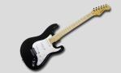
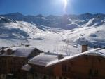

| Le Foot : Un de mes sports favoris. Même si je le pratique de temps en temps, j'adore surtout le regarder et suivre les matchs importants. Sans oublier les jeux de Coaching et d'action comme Football manager et PES Liens et infos : Maxifoot - Football Manager - PES |
|
|  | La Guitare : Ma plus grande passion dans la vie, j'y joue 3 à 4 heures par semaine pour essayer de ne pas perdre la main. Je suis assez fan de pop anglaise (Travis, Muse, Franz Ferdinand) et adore reproduire leur morceau. Mais j'aime bien créer de nouvelles mélodies pour avoir mon propre style. |
|
|
Le cinéma : J'aime tout particulièrement les films d'animations (Shrek, Ice Age) qui pour moi offre une époustoufflante liberté de création, tout comme les effets spéciaux. D'autre part, les films de sciences-fiction permettent de dépasser son imagination. Liens et infos : Allo-cine - Sciences-fiction - court métrage |
|  | La Montagne : Aussi bien en été qu'en hiver, la montagne est pour moi une source de régénération. Que ce soit en ski ou en randonnée, j'en profite pour recharger mes batteries à chaque visite au sommet de l'Alpe d'Huez ou encore bien d'autres pics. |